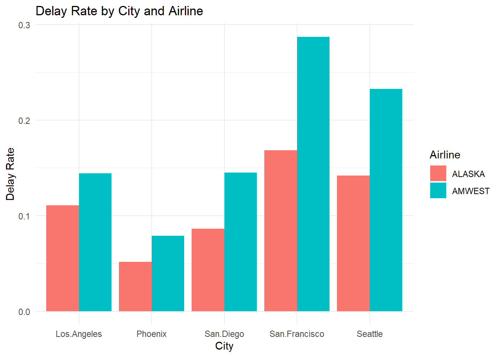
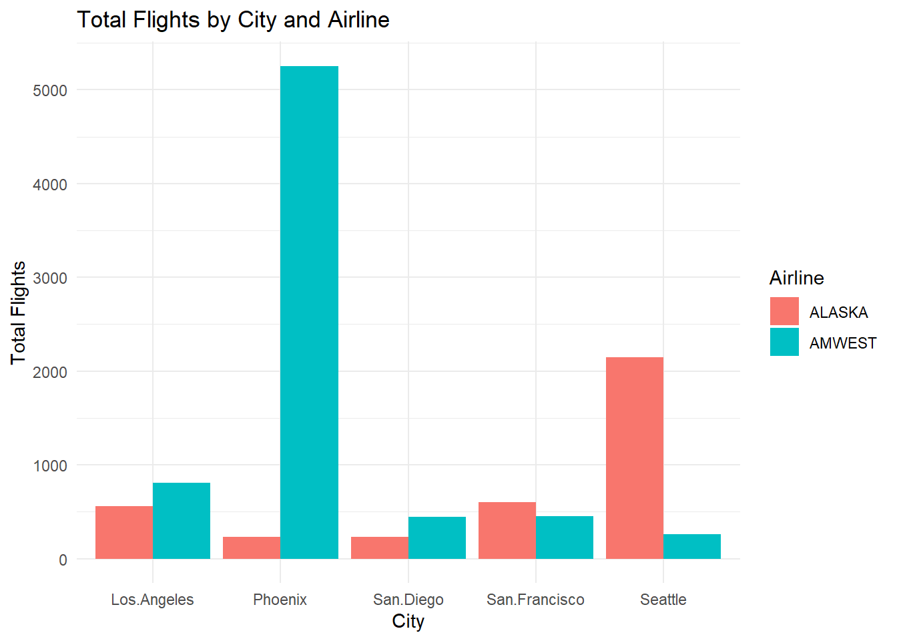

url <- "https://raw.githubusercontent.com/dyc-sps/SPS_Data607_Week5A-/refs/heads/main/Airline%20Delays.csv"SPS_Data607_Week5A
Week 5 Assignment Grading Rubric
Submitted data file with at least some count analysis (+45)
Recreated File in Same Format as given, including missing data where there were empty cells in source data. (+5)
Placed file in Internet-accessible location, such as a publicly-accessible GitHub repo. Also OK (if less scaleable) to generated and populated dataframe from code. (+5)
Provided code to populate missing data. (+5)
Transformed data from wide to long format. (+10)
Compared percentage (not just counts) of either delays or arrival rates for two airlines overall. [Either with a chart, or a table; both would be exemplary]. Include text summarizes findings from this comparison. (+10)
Compared percentage (not just counts) of either delays or arrival rates for two airlines across five cities. [Either with a chart, or a table; both would be exemplary]. Include text summarizes findings from this comparison. (+10)
Describe discrepancy between comparing two airlines’ flight performances city-by-city and overall. (+5)
Explain discrepancy between comparing two airlines’ flight performances city-by-city and overall.(+5)
Approach
Looking at the dataset, rotating the data structure becomes essential. Splitting it into a few additional tables would make comparisons easier. For example, comparing the average delays of two airlines can be simplified by transforming a wide format(cross-tab) into long format. This is how multiple tables in a database allow us to store data in a multi dimensional structure.
https://raw.githubusercontent.com/dyc-sps/SPS_Data607_Week5A-/refs/heads/main/Airline%20Delays.csv
Running Code
library(tidyverse)── Attaching core tidyverse packages ──────────────────────── tidyverse 2.0.0 ──
✔ dplyr 1.1.4 ✔ readr 2.1.6
✔ forcats 1.0.1 ✔ stringr 1.6.0
✔ ggplot2 4.0.1 ✔ tibble 3.3.1
✔ lubridate 1.9.4 ✔ tidyr 1.3.2
✔ purrr 1.2.1
── Conflicts ────────────────────────────────────────── tidyverse_conflicts() ──
✖ dplyr::filter() masks stats::filter()
✖ dplyr::lag() masks stats::lag()
ℹ Use the conflicted package (<http://conflicted.r-lib.org/>) to force all conflicts to become errorsdf_airline <- read.csv(url)
head(df_airline) X X.1 Los.Angeles Phoenix San.Diego San.Francisco Seattle
1 ALASKA on time 497 221 212 503 1841
2 delayed 62 12 20 102 305
3 NA NA NA NA NA
4 AMWEST on time 694 4840 383 320 201
5 delayed 117 415 65 129 61colnames(df_airline)[1:2] <- c("Airline", "Status")
df_airline <- df_airline %>% fill(Airline)
head(df_airline) Airline Status Los.Angeles Phoenix San.Diego San.Francisco Seattle
1 ALASKA on time 497 221 212 503 1841
2 delayed 62 12 20 102 305
3 NA NA NA NA NA
4 AMWEST on time 694 4840 383 320 201
5 delayed 117 415 65 129 61#Check What it Actually has
unique(df_airline$Airline)[1] "ALASKA" "" "AMWEST"#Convert Blank Strings to NA
df_airline <- df_airline %>%
mutate(Airline = str_trim(Airline)) %>%
mutate(Airline = na_if(Airline, ""))
head(df_airline) Airline Status Los.Angeles Phoenix San.Diego San.Francisco Seattle
1 ALASKA on time 497 221 212 503 1841
2 <NA> delayed 62 12 20 102 305
3 <NA> NA NA NA NA NA
4 AMWEST on time 694 4840 383 320 201
5 <NA> delayed 117 415 65 129 61Fill missing airline cells and remove empty line
head(df_airline) Airline Status Los.Angeles Phoenix San.Diego San.Francisco Seattle
1 ALASKA on time 497 221 212 503 1841
2 <NA> delayed 62 12 20 102 305
3 <NA> NA NA NA NA NA
4 AMWEST on time 694 4840 383 320 201
5 <NA> delayed 117 415 65 129 61df_airline <- df_airline %>%
filter(Status != "", !is.na(Status))
head(df_airline) Airline Status Los.Angeles Phoenix San.Diego San.Francisco Seattle
1 ALASKA on time 497 221 212 503 1841
2 <NA> delayed 62 12 20 102 305
3 AMWEST on time 694 4840 383 320 201
4 <NA> delayed 117 415 65 129 61# filling the airline look last block for NA check and convert
df_airline <- df_airline %>%
fill(Airline)
# convert to long format
df_long <- df_airline %>%
pivot_longer(
cols = -c(Airline, Status),
names_to = "City",
values_to = "Flights"
)
df_long# A tibble: 20 × 4
Airline Status City Flights
<chr> <chr> <chr> <int>
1 ALASKA on time Los.Angeles 497
2 ALASKA on time Phoenix 221
3 ALASKA on time San.Diego 212
4 ALASKA on time San.Francisco 503
5 ALASKA on time Seattle 1841
6 ALASKA delayed Los.Angeles 62
7 ALASKA delayed Phoenix 12
8 ALASKA delayed San.Diego 20
9 ALASKA delayed San.Francisco 102
10 ALASKA delayed Seattle 305
11 AMWEST on time Los.Angeles 694
12 AMWEST on time Phoenix 4840
13 AMWEST on time San.Diego 383
14 AMWEST on time San.Francisco 320
15 AMWEST on time Seattle 201
16 AMWEST delayed Los.Angeles 117
17 AMWEST delayed Phoenix 415
18 AMWEST delayed San.Diego 65
19 AMWEST delayed San.Francisco 129
20 AMWEST delayed Seattle 61df_long %>%
group_by(Airline, Status) %>%
summarise(total = sum(Flights), .groups = "drop")# A tibble: 4 × 3
Airline Status total
<chr> <chr> <int>
1 ALASKA delayed 501
2 ALASKA on time 3274
3 AMWEST delayed 787
4 AMWEST on time 6438Airline delay percentage
df_long %>%
group_by(Airline) %>%
summarise(delay_rate = sum(Flights[Status == "delayed"])/sum(Flights) )# A tibble: 2 × 2
Airline delay_rate
<chr> <dbl>
1 ALASKA 0.133
2 AMWEST 0.109City delay percentage
df_long %>%
group_by(Airline, City, Status) %>%
summarise(total = sum(Flights), .groups = "drop")# A tibble: 20 × 4
Airline City Status total
<chr> <chr> <chr> <int>
1 ALASKA Los.Angeles delayed 62
2 ALASKA Los.Angeles on time 497
3 ALASKA Phoenix delayed 12
4 ALASKA Phoenix on time 221
5 ALASKA San.Diego delayed 20
6 ALASKA San.Diego on time 212
7 ALASKA San.Francisco delayed 102
8 ALASKA San.Francisco on time 503
9 ALASKA Seattle delayed 305
10 ALASKA Seattle on time 1841
11 AMWEST Los.Angeles delayed 117
12 AMWEST Los.Angeles on time 694
13 AMWEST Phoenix delayed 415
14 AMWEST Phoenix on time 4840
15 AMWEST San.Diego delayed 65
16 AMWEST San.Diego on time 383
17 AMWEST San.Francisco delayed 129
18 AMWEST San.Francisco on time 320
19 AMWEST Seattle delayed 61
20 AMWEST Seattle on time 201df_city_delay <- df_long %>%
group_by(City,Airline) %>%
summarise(delay_rate = sum(Flights[Status == "delayed"])/sum(Flights),.groups = "drop" )
library(ggplot2)
ggplot(df_city_delay, aes(x = City, y = delay_rate, fill = Airline)) +
geom_col(position = "dodge") +
labs(
title = "Delay Rate by City and Airline",
y = "Delay Rate",
x = "City"
) +
theme_minimal()
Discrepancy
df_city_total <-df_long %>%
group_by(City,Airline) %>%
summarise(total = sum(Flights), .groups = "drop")
ggplot(df_city_total, aes(x = City, y = total, fill = Airline)) +
geom_col(position = "dodge") +
labs(
title = "Total Flights by City and Airline",
y = "Total Flights",
x = "City"
) +
theme_minimal()
Comparing ALASKA and AMWEST, there are clear differences in flight volumes and delay rates across cities. AMWEST has more flights in Phoenix, Los Angeles, and San Diego, while ALASKA dominates Seattle flights. In terms of delays, AMWEST consistently has a higher percentage of delayed flights than ALASKA in most cities, with the largest difference in San Francisco and Seattle. These discrepancies highlight differences in operational scale and punctuality between the two airlines.